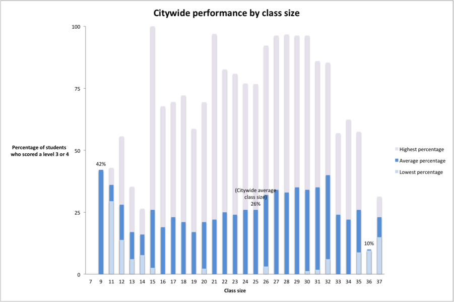

At the start of the school year, de Blasio’s greatly anticipated expansion of the city’s existing universal pre-K program publicly boasted an enrollment number of more than 51,500 preschoolers across the city’s 32 districts -- a number just shy of his administration’s original enrollment goal of 53,000.
Even though ultimately, 70,000 children will get a jumpstart into their education if de Blasio fulfills his goal, parents, lobbyists and advocates among public schools who work closely with the city’s Department of Education argue the program’s expansion is directly undermining the already tenuous citywide overcrowding crisis among public schools.
“These proposals, though laudable, will put even more pressure on existing school capacity,” Leonie Haimson, Executive Director of Class Size Matters, a nonprofit organization dedicated to advocating for smaller classes in New York City schools wrote in her report, Space Crunch. “Without a specific plan to lease or build more facilities, [they are] likely to cause even more overcrowding and lead to yet larger class sizes.”
The truth is, even though the advantages of pre-k are well documented (one study even suggests that attending pre-K makes you more than twice as likely to have an IQ over 90) and the expansive initiative would alleviate the gaping socioeconomic disparity over the long-term, many argue that New York City and its 8.4 million people, can spare no room for it. That is, 57 percent of the city’s students within the public school system are taught in buildings which are overcrowded. This means that more than one-third of the city’s public schools don’t have enough classrooms to hold the students they’re required to enroll, much less room for another 20,000 preschoolers. One solution the city quietly opts for includes raising the ratio of students to teachers above UFT and New York State Department of Education limits. Cramming upwards of 40 students into a single classroom saves the Department of Education money and allows public schools to continue to accept more students without creating more space.
The only problem is, research shows that the larger the classroom, the more detrimental the learning environment is to student achievement – especially for the early grades. For instance, one study linked smaller classes in early education with an increased likelihood of attending college, owning a home and earning a larger salary. Overcrowded classrooms, on the other hand, threatens the quality of students’ education and can cause students’ to earn 6 percent less than their peers in smaller classes, later in life. Ironically, these early elementary school Kindergarten through fifth grade students will also be those directly affected by the expansion of pre-K.
Harry Hartfield, the Deputy Press Secretary at the New York City Department of Education, acknowledged the overcrowding crisis pointing out the creation of a new Capital Plan which will build 33,000 new seats. “School overcrowding is a longstanding historical issue in the city, and we are using all the tools available to us, such as rezoning, new construction and leasing space, to address it,” he said.
Is the tradeoff fair? Existing data provided by the city can be used to examine the relationship (if any) between class sizes and early elementary school student performance on the English Language Arts portion of the Common Core, the city’s gage of student retention.
Student performance and class size
Can one really predict the other?
The chart below reflects the highest performing third, fourth and fifth grade classes (seen in purple) and the lowest performing (seen in light blue) organized by class size. Their performance is measured by the percentage of students who scored a level 3 or higher on the ELA portion of the Common Core. Average class sizes ranged from tiny (the Ella Baker School reported only nine students in their third grade class) to gargantuan (one Brooklyn and one Queens fourth grade class both reported an average of 37 students in their classes). The percentages of all the students who scored a level 3 or 4 were averaged for each class size. This meant that for the two classes reporting an average class size of 37 students, their percentage of students scoring a level 3 or 4 (31.3 percent and 14.9 percent) yielded an average of 23 percent of students in class sizes of 37 scoring a level 3 or 4.
2,202 early elementary school classes reported a total of 61,585 students scoring a level 3 or 4:

The averages of students scoring a level 3 or 4 actually confirm the theory that larger classes negatively affect student performance: The smallest class size reported also managed to average 42 percent of their students scoring a level 3 or 4, the highest percentage of top performing students out of all the class sizes. However, looking at these averages only, the second highest performing class size is 32 kids – a whopping 14 kids above the city’s target capacity – which averaged 40 percent of students scoring a level 3 or 4. Confusingly, close behind is a class size of 11, which reported an average of 36 percent of their students scoring a level 3 or 4. Perhaps the average of all proportions of high-scoring students arranged by class size is not the best measurement.
Looking at the highest percentages only also corroborates this theory. For instance, the only class size in which 100 percent of students scored a level 3 or 4 was a relatively small class size of 15, which is below the city’s target capacity for early elementary school classes. By the same token, student performance on the ELA portion of the Common Core generally tapers from a high of 96 percent to only 31.3 percent of students scoring a level 3 or 4 as class sizes increase above 30. Interestingly enough, as class size increases from 32, which is the maximum amount of students the United Federation of Teachers, New York City’s teachers’ union, allows per classroom, to 33, performance drops significantly from a high of 85.3 percent to 56.9 percent of students scoring a level 3 or 4.
However, neither measurement is exactly reliable. Case in point: Taking everything into account, the class sizes with the highest performing students (calculated by averaging the percentage of students scoring a level 3 or 4 for each class size) turned out to be the smallest, occurring at the Ella Baker School in the Upper East Side. Ironically, InsideSchools, an independent blog specializing in reviewing every school in New York City, argues the biggest “downside” of the school is their low test scores. The truth is, as the only school reporting a class size of 9, there was no need to average the high and low scores allowing the Ella Baker School’s raw performance (42 percent of students scored a level 3 or higher) to remain intact. As a comparison, 208 schools reported a class size of 28, meaning that Manhattan’s P.S. 212 Midtown West’s 70 percent of kids scoring a level 3 or higher and none of Harlem’s P.S. 149 Sojourner Truth’s kids scoring a level 3 or higher would have to average, along with 206 other schools, thereby massively skewing the data. The conclusion? Class size and school performance is nearly impossible to compare using raw data uncontrolled for an infinite number of variables ranging from teacher quality, to socio-economic status, to students' prior scholatistic experiences.
Haimson’s Findings on Overcrowding
NOISE LEVELS: Crowded schools
are noisier. A study by Gary Evans, a
psychologist at Cornell University, found
that, “Teachers in noisy schools are
more fatigued, annoyed, and less patient
than teachers in quieter schools.
Teachers in noisy schools also lose instruction
time due to noise distractions
and have a compromised teaching
style. Children exposed to chronic loud
noise also experience a rise in blood
pressure and stress hormones.”
DENSITY (number of people per room):
Crowded schools and crowded
class- rooms have a greater density of
people. Evans found that 10-12-yearold
children tend to withdraw in overcrowded situations, and “children
may engage in withdrawal behavior as a
means of coping with an over-stimulating
environment…”
IMPACT ON CLASS SIZE: Students in
crowded schools tend to have larger
class sizes, which have a negative
effect on student learning. There are
a wealth of studies, both experimental
and correlational, demonstrating that
larger classes are detrimental to student
engagement, motivation, time on task,
achievement levels, and graduation rates.
RESULTS IN TERMS OF LEARNING: Many
studies show an association between
overcrowding and poor student outcomes,
particularly for low-income
students. An analysis conducted by the
Teachers College of Columbia University
in 1995 found that overcrowded schools
with a high proportion of low-income
students scored as much as nine percentage
points lower on achievement
tests than similar students in less crowded
schools. Many other studies have also
found negative associations between
crowded spaces and poor academic
outcomes, particularly among lowincome
and minority students.
PSYCHOLOGICAL OUTCOMES:
Substandard school environments
have adverse psychological effects on
children. A study of overcrowded and
poorly maintained schools in California
found that students in these schools
exhibited anger and shame about the
relative deprivation in their schools.
Another study found positive relationships
between school conditions and student
behavior.30 A researcher concluded that
“the depressed physical environment
of many schools…is believed to reflect
society’s lack of priority for these children
and their education.”
TEACHING: Teachers are more relaxed
and more effective when schools are
in good condition and facilities are
clean and well-maintained. Studies find
that teachers are more stressed, have
more absences, and are more likely to
experience “burnout” when schools are
overcrowded.
One Mother's Distress
EVERYDAY, six-year old Sydney McGowan walks into a classroom that overflows with 43 other children who share the same 770-square-feet of classroom space -- a space that is typically allotted for half the number of students. Surprisingly, Sydney’s case is not uncommon among public school elementary students across New York City: Like 48 percent of her peers in Manhattan, the first grader is taught in overcrowded conditions. What’s worse, her class shares the room with another class in the same section at P.S. 11 in Chelsea.
P.S. 11 is one of the most overcrowded schools in District 9 with an overcapacity rate of 103 percent according to the 2013-2014 Enrollment, Capacity and Utilization Report released by the New York City Department of Education and New York City School Construction Authority.
“Right now, they don’t even have room to play outside,” said Deborah McGowan, Sydney’s mother, in reference to the children in her daughter’s class. “They don’t get to eat in the cafeteria and pick where they want to sit and socialize with who they want and those things are very good to learn at this age.” Instead, McGowan’s daughter has to eat lunch at her desk in the classroom, since there is no space in the cafeteria during lunchtime. Despite the limited space it already has, P.S. 11 implemented a pre-K program this past September like many other schools across the city. The school’s inclusion of the pre-K program was mandated in order to comply with Mayor Bill de Blasio’s Universal pre-K expansion.
The City's Response
According to the New York City Construction Authority’s Capital Plan, the Administration acknowledges that de Blasio’s pre-K initiative will contribute to capacity concerns by “[adding] significantly to new capacity to be constructed.” However, this belief is contingent upon the success of class size reduction -- an effort which has seen no success over the past seven years, as class sizes have consistently increased according to DOE class size reports. As for the Administration’s plan of action, they report that “analyses are currently underway for these new categories.”
“The Mayor and Chancellor have said repeatedly that overcrowding is a serious issue to them and have already taken steps to combat it,” said Harry Hartfield, the Deputy Press Secretary at the New York City Department of Education.
While he argues that the alarming trade off between classroom functionality and space is being addressed by city officials, in reality, New York City Schools Chancellor Farina turned a blind eye this past fall when Lower Manhattan’s P.S. 323, The Peck Slip School, pleaded with her for more space during their incubation period while waiting for their new school to be built.
Joy Martini, President of the school’s PTO, said that seven Kindergarten, first- and second-grade classes were crammed into five classrooms temporarily sectioned off by flimsy dividers. Ironically, these temporary rooms share the same building with Chancellor Farina’s office -- and are across the hall from her two large, unused meeting rooms. Parents said the environment was so distracting to their children that they complained about being able to hear lectures through the dividers. “There are two rooms that the Chancellor keeps for her own conference use (not often used) that could easily be turned into classrooms,” said Martini as she noted that their effort was “squarely focused on getting the Chancellor to share these rooms.”
Class Size Policies
Despite the known relationship between class size and student performance, class size policies are issued on a state-by-state basis and as of 2009, less than half of the states maintain class size reduction efforts. Although class size maximums have been defined, New York is not one of those states with sweeping class size reduction efforts. In fact, while the New York State Department of Education does fund a Contracts for Excellence budget specific to class size reduction within New York City alone, the 2009 recession forced the state to freeze their funding for several years. The setback, not unique to New York (three of the 23 participating states also lost funding due to economic downturns), caused a dangerous spike in overcrowding: More than 330,000 students attended classes of 30 or larger last year. Now, more than 480,000 students citywide are taught in extremely overcrowded buildings, according to Haimson’s report.
Every state with legislation addressing class size reduction with the exception of Texas set a maximum limit of 20 students per classroom. New York, however, doesn’t bar classes exceeding 20 students per room as long as there are two teaching assistants present. The most updated report issued by New York City this past November indicated that it would take upwards of 24 years in grades K-3 and 38 years in grades 4-8 to achieve reduced class size goals of TK set by the Contracts for Excellence budget. Some argue that the alarmingly sluggish progress will be undermined by the expansion of universal pre-K mandated by Mayor Bill de Blasio this past school year.
Contract for Excellence Plan
While both universal pre-K and class size reduction is part of a six-pronged citywide budget administered by the state, pre-K has received significantly more attention and tangible results. On the other hand, class size reduction has received $160.3 million, but has seen only hindrances and setbacks as ratios between students and teachers consistently increase annually, according to Haimson.
Over the course of nine months, under the Contract for Excellence plan which designates citywide funding for pre-K and class size reduction, de Blasio allotted $9.5 million to fund his initiative -- a fraction of the amount that the class size reduction effort has received. According to leases signed by the New York City School Construction Authority, for every new preschooler enrolled in universal pre-K, at least $494 is needed to fund 20 more square feet of classroom space -- a minimum spatial requirement designated by the New York City Department of Building’s building code. While universal pre-K might seem like a win-win situation, it’s much needed space, money and attention has put New York City’s historic class size reduction initiative on the backburner, according to multiple community education council leaders, public school lower-elementary school teachers, lobbyists and parents.
“The city made a commitment in 2007 to reduce class sizes in all grades as part of the Contract 4 Excellence law and instead class sizes have gone up significantly every year since then and now they’re the largest in 15 years in grades K-3,” said Haimson. “Many of the gains that would be expected from preschool will be undermined once kids get to kindergarten,” Haimson pointed out in reference to the shortage of classrooms caused by the introduction of new preschool programs.